"How do we visualize this on the tool, in some kind of concise and visual way, very important, visual, visual, visual."
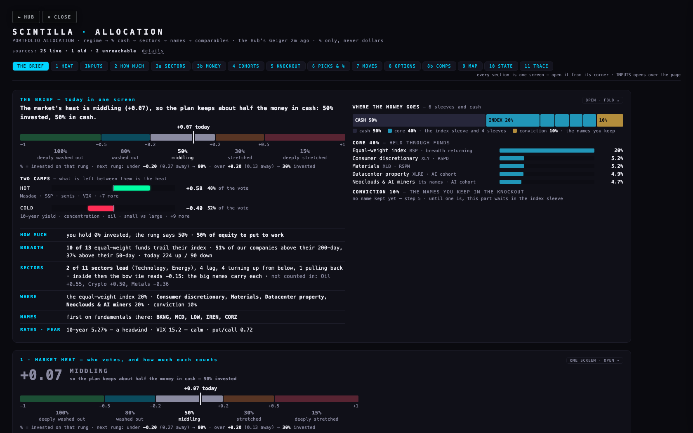
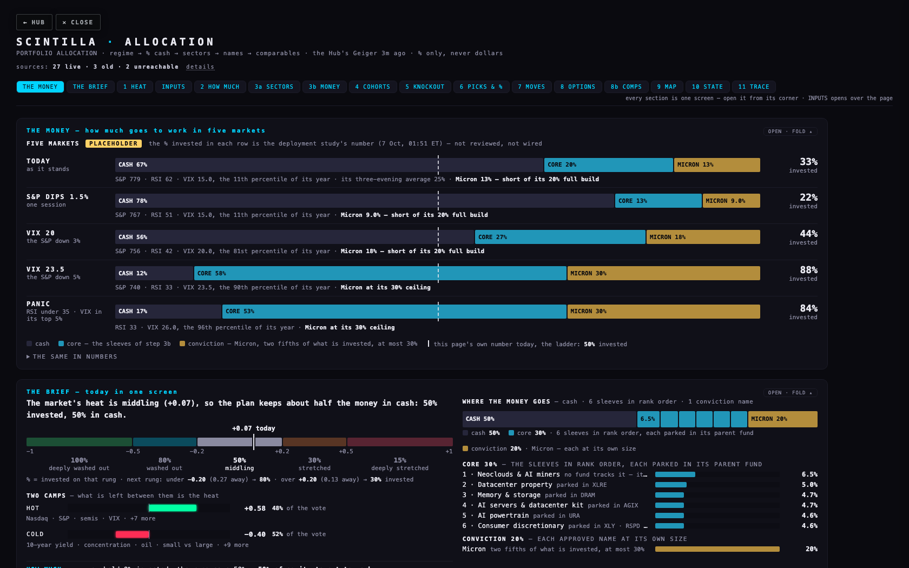
| MARKET | INVESTED | CASH | CORE | MICRON | THE READING |
|---|---|---|---|---|---|
| TODAYas it stands | 33% | 67% | 20% | 13% | S&P 779 · RSI 62 · VIX 15.0 |
| S&P DIPS 1.5%one session | 22% | 78% | 13% | 9.0% | S&P 767 · RSI 51 · VIX 15.0 |
| VIX 20the S&P down 3% | 44% | 56% | 27% | 18% | S&P 756 · RSI 42 · VIX 20.0 |
| VIX 23.5the S&P down 5% | 88% | 12% | 58% | 30% | S&P 740 · RSI 33 · VIX 23.5 |
| PANICRSI under 35 · VIX in its top 5% | 84% | 17% | 53% | 30% | RSI 33 · VIX 26.0 |
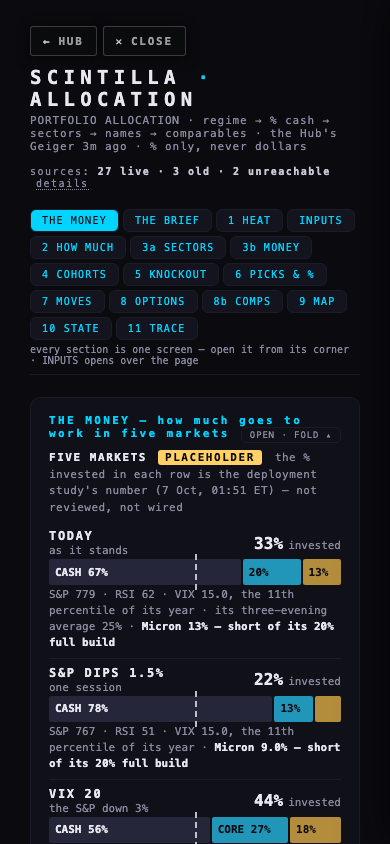
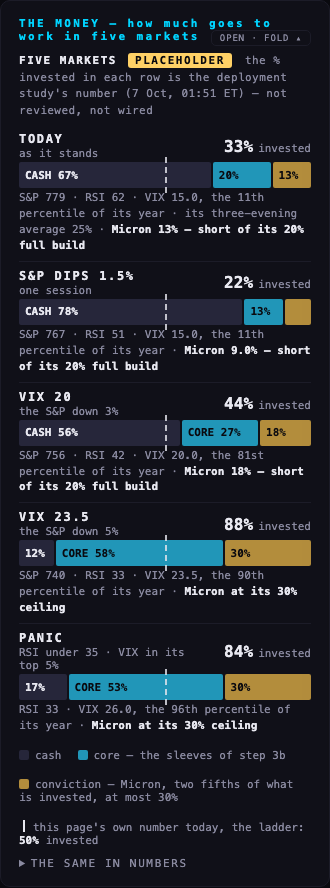
"I don't know if all of those toggles are going to even be used anymore … at least in the equity deployment recommendation. And if they're not, they need to be separated into a separate toggle section if they only really cover sector compare … that's important to know and to do."
Each dial, toggle, button and stored setting was moved in a hidden browser, one at a time, and the page was read before and after: did the % invested change, the mix, the names, or nothing. The table is the answer, with the line of the page's code that proves each. The tests repeat it every time they run.
| INPUT | WHERE IT IS NOW | IT MOVES | THE LINE OF index.html THAT PROVES IT |
|---|---|---|---|
| The ladder — five rungs (5 sliders) | INPUTS · how much | the % invested | line 2695 — the heat's condition picks one of the five numbers line 1396 — and that number is how much is invested, everywhere |
| The voters' weights (a slider on each of the 33 voters) | step 1, on each voter's row | the % investedand the names | line 2664 — the heat is the weighted average of the voting rows line 2275 — the heat also sets how many names AUTO offers |
| VIX — where it reads fully cold | INPUTS · how much (moved from step 1) | the % invested | line 2405 — sets the VIX voter's reading |
| 10-year yield — where it reads fully cold | INPUTS · how much (moved from step 1) | the % invested | line 2409 — sets the 10-year voter's reading |
| The blended sector reading — five weights (5 sliders) | INPUTS · where it goes | the mixand the % invested, slightly | line 1207 — each sector's reading is the weighted average of five methods line 1419 — the reading is two of a sleeve's three ranking answers line 2442 — the same blend is one voter in the heat — the one way these reach the % |
| The ranking — growth, regime fit, opportunity (3 sliders, new) | INPUTS · where it goes | the mix | line 1423 — a sleeve's score is its three places, weighed |
| Smallest sleeve | INPUTS · where it goes | the mix | line 1458 — the last of the ranking is left out while any sleeve would be smaller |
| A conviction name's own size (a figure on each name, new) | step 6, on the name's row | the mix | line 1441 — his figure is the name's size; the core is what is left |
| KEEP and DROP | steps 5, 8 and 8b | the namesand the mix | line 3498 — a kept name joins the picks line 1436 — the conviction list is the approved names and the picks |
| The cohort in the knockout | step 4 | the names | line 3375 — which companies face off |
| Names — AUTO or MANUAL · most per sleeve · concentration lean · names per sleeve (a toggle and 3 sliders) | INPUTS · where it goes | the names | line 2275 — the count of pick cards line 3483 — the knockout offers that many |
| Most names in all | INPUTS · where it goes | the names | line 3676 — the comps sheet refuses a pick past it |
| ★ on a name | step 8 | the names | line 3305 — adds the name to the comps sheet |
| Invested now | INPUTS · where you are | the gap only | line 2778 — the move is the target minus this; the target is not touched |
| Conviction, as one share | INPUTS · listed for removal | nothing | line 2758 — nothing computes with it: its only mentions are its own read-out and its row in this audit (lines 2758, 3122) |
| Index sleeve | INPUTS · listed for removal | nothing | line 1459 — the equal-weight fund is all or nothing now — the split does not read the dial; its only mentions are its read-out and its audit row (lines 2758, 3123) |
| Most sleeves | INPUTS · listed for removal | nothing | line 1456 — every candidate starts in — no cap is read; its only mentions are its read-out and its audit row (lines 2758, 3124) |
| …of which large caps | INPUTS · listed for removal | nothing | line 2777 — it only feeds two numbers that are handed to three functions and read by none of them (every line that names them: 2778, 2833, 2835, 2839, 3029, 3260, 3678) |
| Heat tilt toward large caps | INPUTS · listed for removal | nothing | line 2705 — it tilts a large / small split line 3708 — that is printed in one line of the audit trace and used nowhere else |
| Positions, large and small (stored, no control) | the saved settings | nothing | line 2775 — they divide a split that is handed on and read by nothing (every line that names the result: 2775, 2839, 3678) |
| Three Geiger dials from July (stored, no control) | the saved settings | nothing | line 2136 — their default is the only line that names them |
| The sector method (stored, no control) | the saved settings | nothing | line 1305 — it is only ever set to one word; nothing computes with it (every mention: 1305, 2173, 2174, 3129 — set here, two old migrations, its audit row) |
| Sectors or cohorts (stored, no control) | the saved settings | the mix — and nothing on the page can set it | line 2086 — read at load from the device line 2087 — the only line that could change it — nothing calls it (every mention of setAxis: 2087) |
| A section open or folded · what each voter is · refresh feeds | every section · step 1 · step 8 | what is drawn — no number | line 3746 — the fold line 3739 — reads every source again |
One honest exception, measured as it stands: the five sector-compare weights also reach the % through a single voter, the sectors row, which holds 7% of the vote. Pushing any one of the five end to end moves the heat by at most 0.003 today (+0.06 to +0.07 — it rounds to the same number); the rung stays at 50%. The page prints this sentence live, beside those dials.
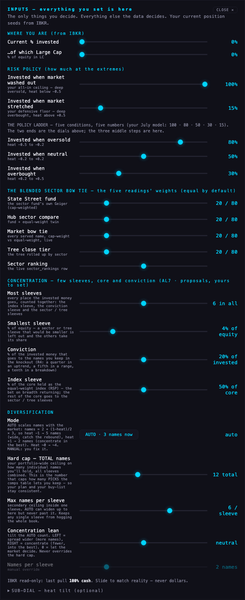
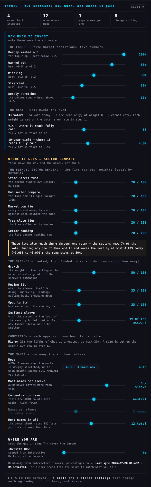
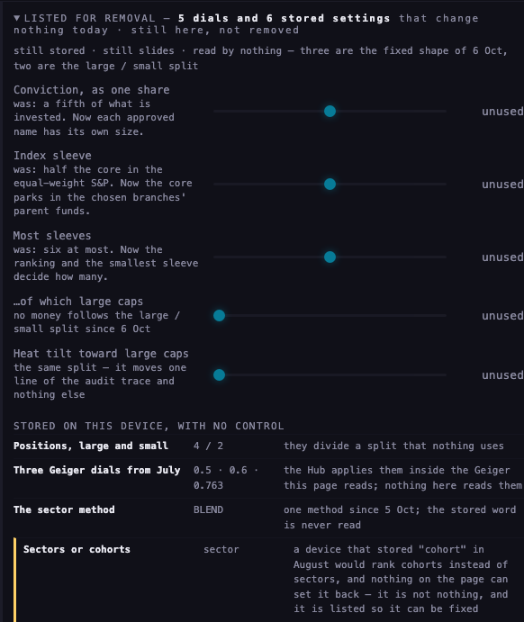
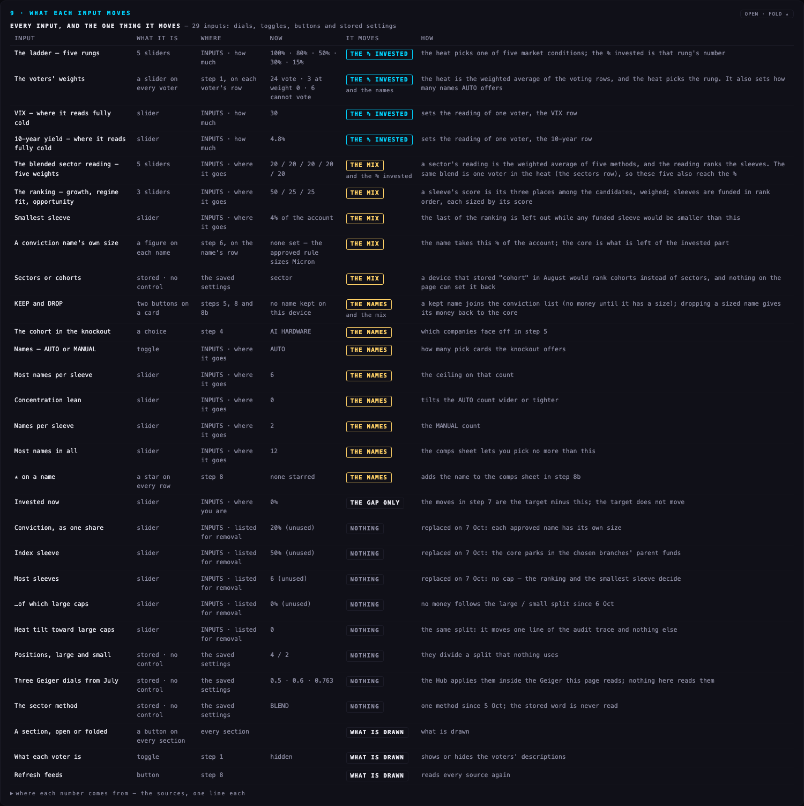
"the conviction doesn't always have to be a fifth of what's invested" · "the index sleeve, half of the core — I don't think I'm understanding … Micron can take a parent sleeve" · "at most six sleeves — I don't think it makes sense to limit it. It makes more sense to force ourselves through the process of picking which sleeves we prefer in the regime, which have better growth, which present better opportunities."
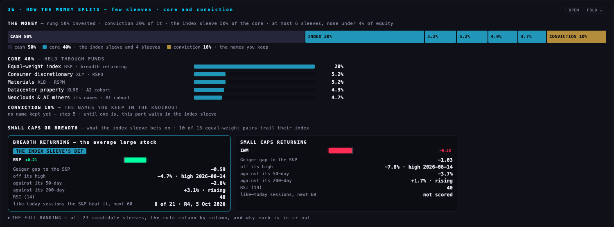
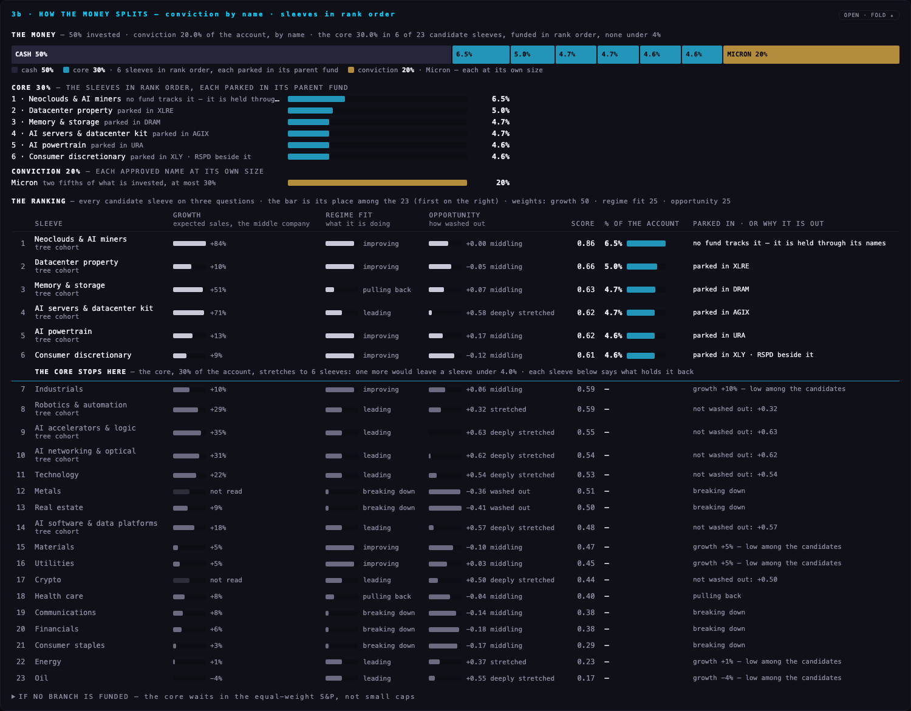
| SLEEVE | GROWTH | REGIME | READING | SCORE | % OF THE ACCOUNT · OR WHAT HOLDS IT BACK |
|---|---|---|---|---|---|
| 1 · Neoclouds & AI miners | +84% | improving | +0.00 | 0.86 | 6.5% · no fund tracks it |
| 2 · Datacenter property | +10% | improving | −0.05 | 0.66 | 5.0% · parked in XLRE |
| 3 · Memory & storage | +51% | pulling back | +0.07 | 0.63 | 4.7% · parked in DRAM |
| 4 · AI servers & datacenter kit | +71% | leading | +0.58 | 0.62 | 4.7% · parked in AGIX |
| 5 · AI powertrain | +13% | improving | +0.17 | 0.62 | 4.6% · parked in URA |
| 6 · Consumer discretionary | +9% | improving | −0.12 | 0.61 | 4.6% · parked in XLY |
| 7 · Industrials | +10% | improving | +0.06 | 0.59 | growth +10% — low among the candidates |
| 8 · Robotics & automation | +29% | leading | +0.32 | 0.59 | not washed out: +0.32 |
| 9 · AI accelerators & logic | +35% | leading | +0.63 | 0.55 | not washed out: +0.63 |
| 10 · AI networking & optical | +31% | leading | +0.62 | 0.54 | not washed out: +0.62 |
| 11 · Technology | +22% | leading | +0.54 | 0.53 | not washed out: +0.54 |
| 12 · Metals | not read | breaking down | −0.36 | 0.51 | breaking down |
| 13 · Real estate | +9% | breaking down | −0.41 | 0.50 | breaking down |
| 14 · AI software & data platforms | +18% | leading | +0.57 | 0.48 | not washed out: +0.57 |
| 15 · Materials | +5% | improving | −0.10 | 0.47 | growth +5% — low among the candidates |
| 16 · Utilities | +5% | improving | +0.03 | 0.45 | growth +5% — low among the candidates |
| 17 · Crypto | not read | leading | +0.50 | 0.44 | not washed out: +0.50 |
| 18 · Health care | +8% | pulling back | −0.04 | 0.40 | pulling back |
| 19 · Communications | +8% | breaking down | −0.14 | 0.38 | breaking down |
| 20 · Financials | +6% | breaking down | −0.18 | 0.38 | breaking down |
| 21 · Consumer staples | +3% | breaking down | −0.17 | 0.29 | breaking down |
| 22 · Energy | +1% | leading | +0.37 | 0.23 | growth +1% — low among the candidates |
| 23 · Oil | −4% | leading | +0.55 | 0.17 | growth −4% — low among the candidates |
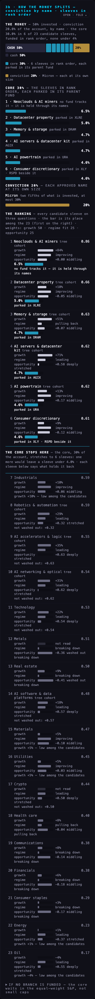
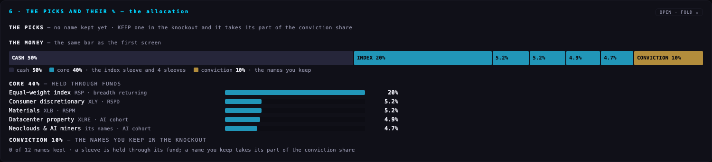
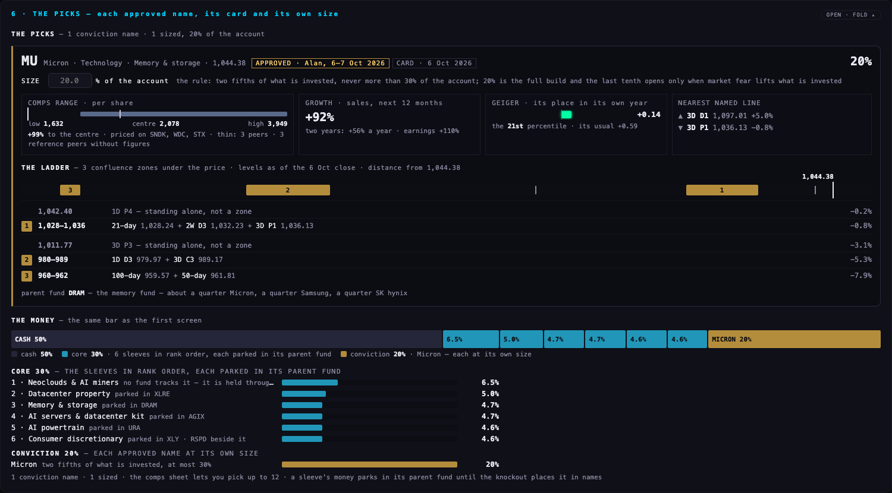
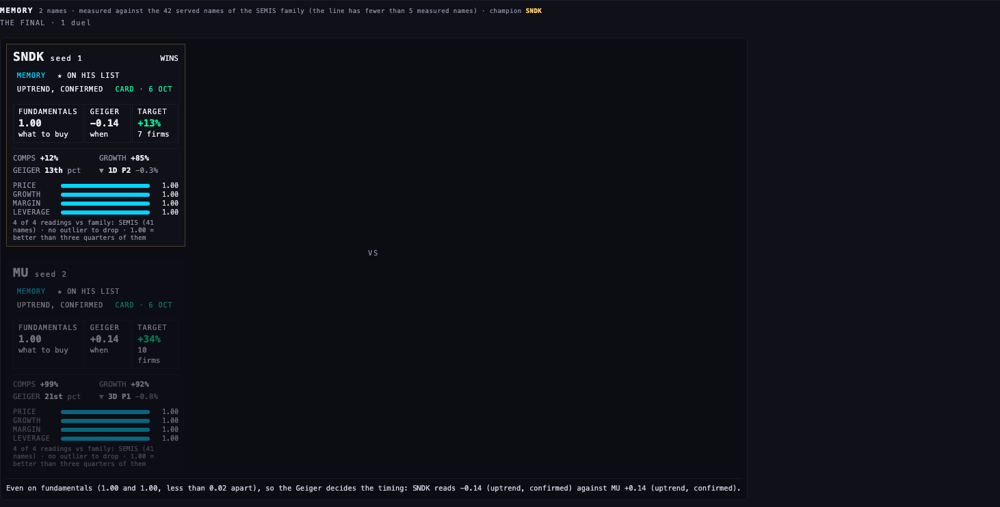
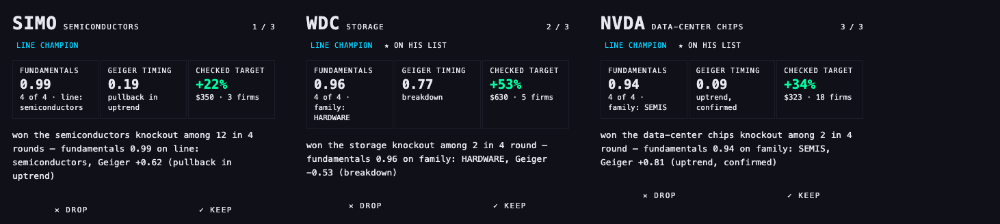
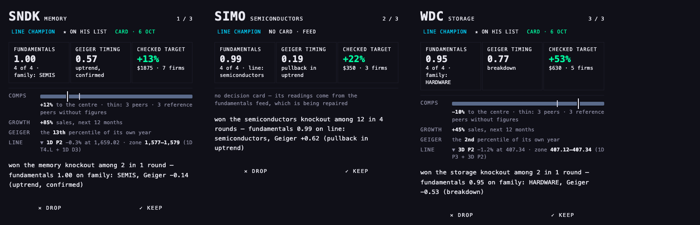
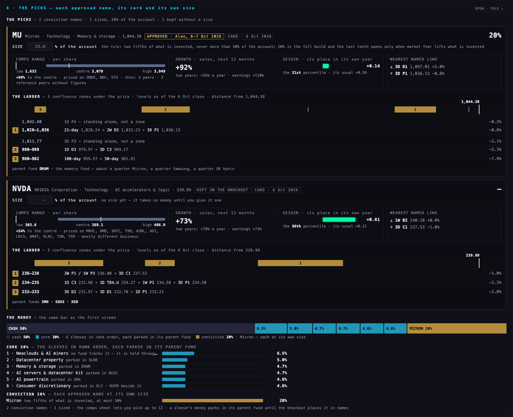
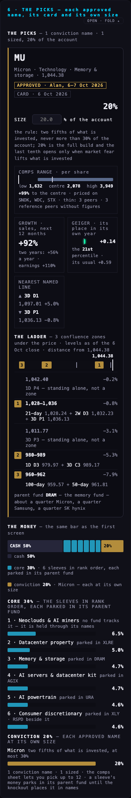
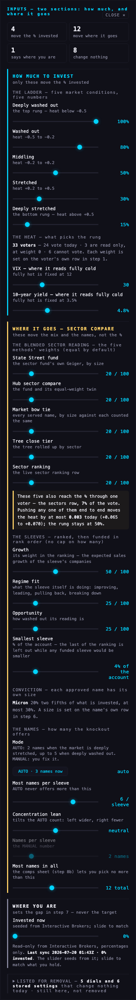
| WHAT | FROM | NOTE |
|---|---|---|
| % invested, in the five bars | the deployment study's five scenario rows, from the 6 Oct close | a dated copy kept with the page, marked placeholder; the engine's own file wins the moment it is beside the page |
| % invested, everywhere else | the ladder, read from the heat — as before | one function says how much; it is the engine's seat when you approve it |
| Micron's size | your rule of 6–7 Oct, kept with the page in your words | two fifths of what is invested, at most 30%; your own figure in step 6 overrides it |
| A sleeve's growth | stored analyst estimates: next fiscal year's sales against the year before, per company; the middle company | three companies with an estimate are needed; a metal has no sales and counts as the middle |
| Regime fit, opportunity | the sleeve's own blended reading — trend, momentum, level | the two numbers of the 6 Oct ranking rule, kept as they were |
| Comps range, growth, Geiger's place in its year | the 26 decision cards dated 6 Oct | a dated copy kept with the page: the Hub does not serve them yet |
| Nearest named line | the Lab's reviewed lines, the dated extract of 6 Oct; the card's levels, then the zones file's, when a name is not in it | measured from the live price |
| The ladder's zones | the confluence-zones study, levels as of the 6 Oct close | two or more named levels within 1% of each other |
68 of 69 passed before (the evening of 6 Oct's code, run 7 Oct, 02:21–02:24 ET, on the evening of 6 Oct's code — its 71 tests less the two that write a labelled test row, which ran in a first pass whose output was not kept) → 97 of 98 pass now (run 7 Oct, 03:21–03:25 ET, every file, the two write-tests included; run again on the final code at 03:27–03:31 ET without those two: 95 of 96). The one failure is the same on both sides: a check that the sector ranking is under three hours old, which fails by the clock at this hour. 27 tests are new.
Older checks that changed, and why: the 6 Oct fixed shape (a fifth to conviction, half the core to the index, six sleeves) — replaced by your 7 Oct direction; the sample decision card — replaced by the real cards' field names; "the index sleeve's bet" and one study named by its code — reworded; fifteen sections — sixteen, the money first; a kept name "takes its part of the conviction share" — it now waits for its own size; two more sources may read "old", each for a stated reason.